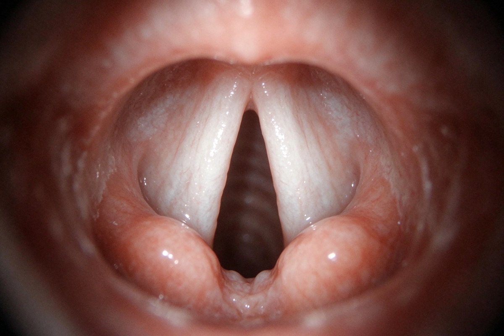
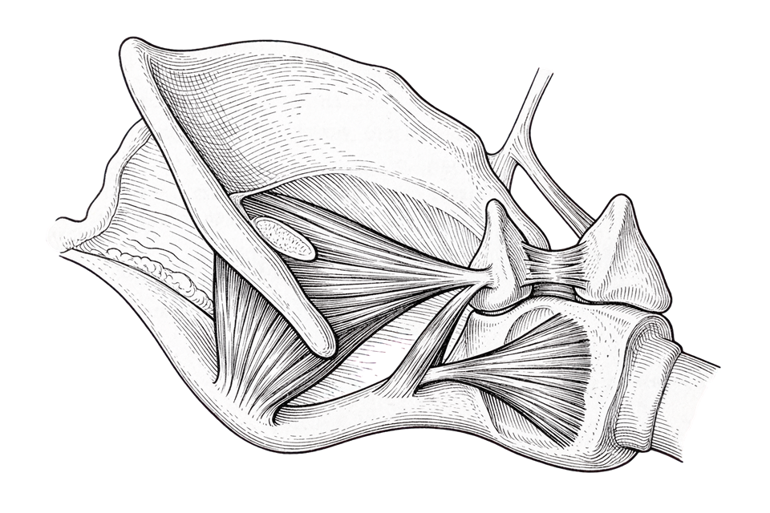
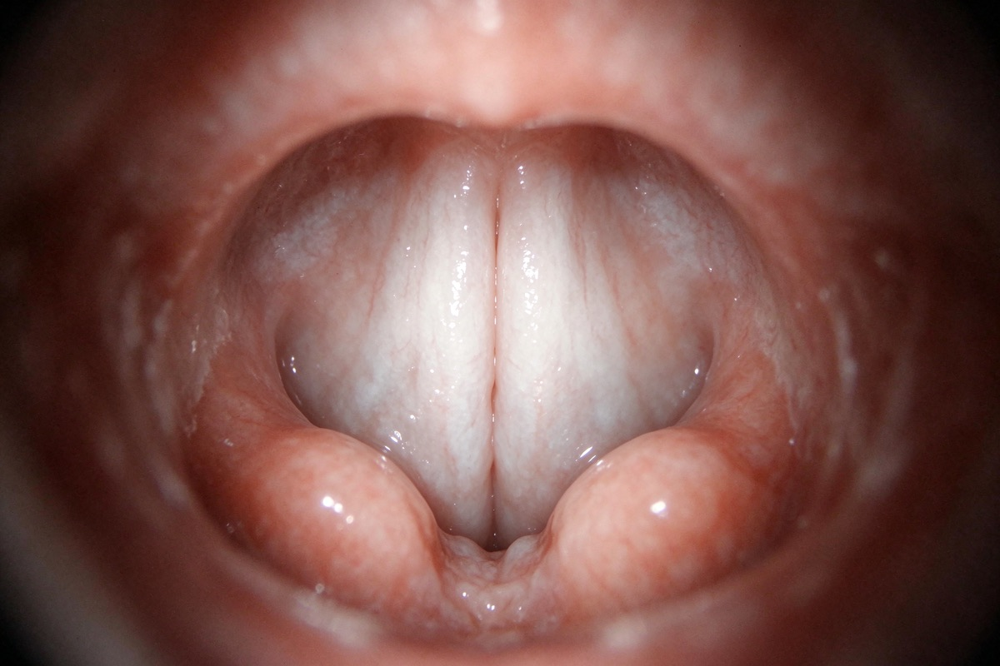
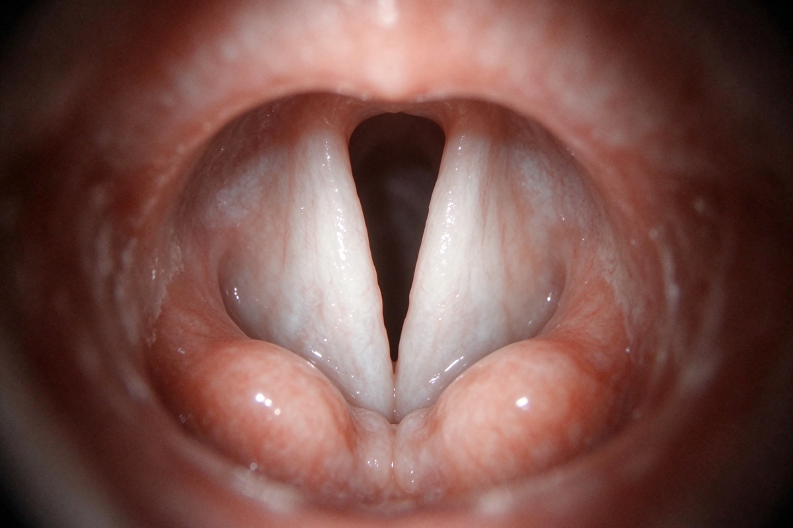
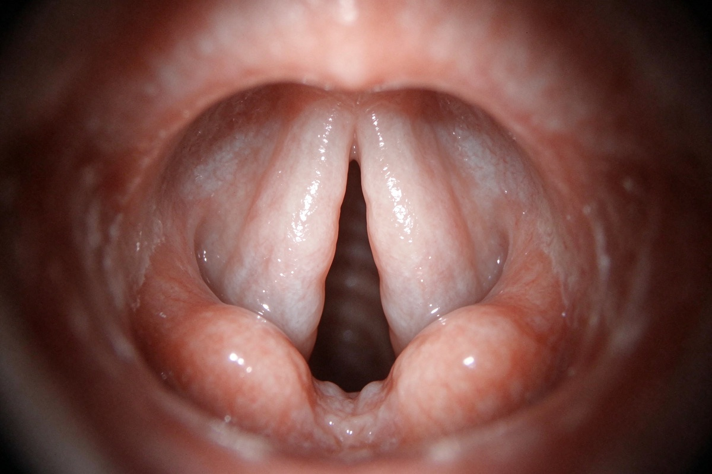
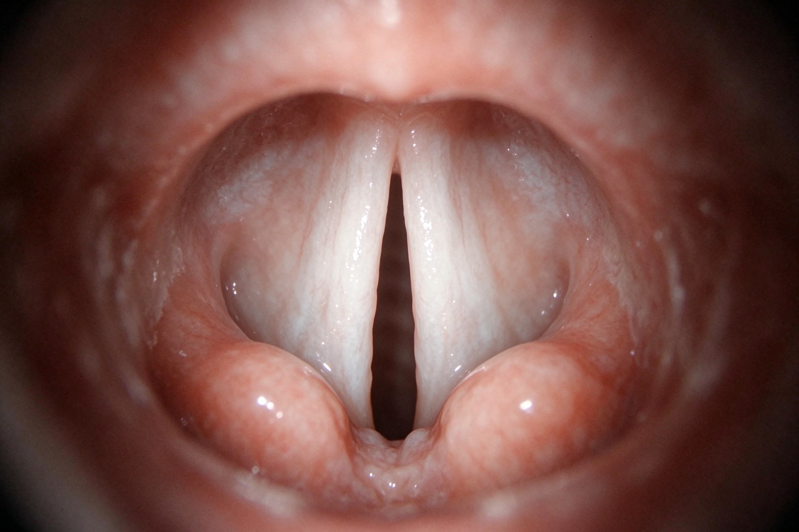

首页 / 学习实验室 / 发声系统解剖 / 喉部发声机制
→ 声乐科学实验室：发声通路结构层（鼻腔→膈，可点）每个结构带位置、功能、歌唱作用与神经支配，全部有出处
LARYNGEAL MECHANICS · 5 GROUPS OF INTRINSIC MUSCLES
古典歌手喉部结构与发声机制
Laryngeal anatomy and phonation for singers
先看清杓状软骨、环状软骨、声带与喉内肌的真实关系，再理解声门开放、闭合和张力调节。模型来自大学医学解剖教学项目。
喉部真实标本与肌肉解剖 · 三维模型真实来源模型
模型使用说明：模型由大学医学教育团队制作或基于真实解剖标本/CT 数据建立，通过原平台官方播放器展示。机制按钮只更新生理说明和观察重点，不会伪装成真实的软骨运动或声带组织形变。本站不下载或重新分发第三方模型文件。
UBC Medicine 的人体喉部解剖标本数字模型，包含喉、咽、下颌、气管与食管。适合先建立真实组织和器官之间的空间关系；拖动旋转、缩放观察。
模型：UBC Medicine · Educational Media / HIVE；人体解剖标本数字化。NoAI；本站仅使用原平台官方嵌入。查看原始模型与来源
声门外展状态示意 · PCA
选择一个机制，理解肌肉如何工作
切换下列机制，右侧说明和观察重点会更新。可旋转模型查看空间关系；涉及肌肉附着的细节，可切换到 Dundee 肌肉与韧带模型。
在真实模型中定位
先观察后方左右杓状软骨、声带突与肌突，再沿声带突向前追踪声带韧带。若要辨认肌肉附着，请切换到 Dundee 肌肉与韧带模型。机制切换只更新观察重点，不改变真实模型。
SELECTED MECHANISM
后环杓肌 · 声带外展
后环杓肌是喉内肌中负责声带外展的唯一肌肉。它作用于杓状软骨的肌突，使杓状软骨在环杓关节上发生旋转，从而使声带突向外侧移动、声门开放。
- 观察杓状软骨及其肌突、声带突。
- 注意这是杓状软骨在环杓关节上的运动，不是整片声带向外平移。
- 主要生理作用：吸气时开放声门。
ANATOMY NOTES先认清结构，再理解动作
以下结构说明用于对照三维模型，重点是软骨、附着点与肌肉作用之间的关系。
线描对照：上面观与喉内肌
上面的三维模型负责真实形态与空间关系，这两张静态线描负责把位置关系一次看清。先在模型里旋转找到结构，再回到图上确认。
喉的上面观上方两侧是杓状软骨，中央是声门裂隙，左右两条带状结构为真声带，下方 V 形为甲状软骨前角。这张图看的是声门区的相对位置，不是声带振动的动态。

喉内肌的关系环甲肌在环状软骨与甲状软骨之间；甲杓肌从甲状软骨内面走向杓状软骨；环杓后肌自环状软骨板后面斜向肌突；环杓侧肌在环状软骨外侧上缘；杓间肌位于两块杓状软骨之间。图上没有编号，按区域辨认，具体附着点以三维模型为准。

五组喉内肌，各自承担不同任务
下列内容描述主要作用，不代表肌肉在歌唱时单独工作。喉部运动来自多组肌肉的协同，且会随音高、响度、元音和发声方式变化。
PCA
后环杓肌
唯一主要声带外展肌。使声带突向外侧移动，开放声门。

LCA
外侧环杓肌
使杓状软骨旋转，声带突向中线靠近，参与声带内收。

IA
杓间肌
横杓肌与斜杓肌使两侧杓状软骨靠近，参与声门后部闭合。

TA
甲杓肌
构成声带体的重要部分，影响声带长度、厚度、刚度和内侧缘形态。

CT
环甲肌
使声带伸长、增加张力，参与音高调节；并非唯一的音高控制因素。
REFERENCES & MODEL CREDITS模型来源与科学依据
模型形态用于结构识别；肌肉功能说明以解剖学文献为依据。若模型标注与权威解剖资料存在差异，应以可靠医学资料为准并记录修订。
本实验室为歌唱教育用途，不提供医疗诊断。当前交互只切换肌肉功能说明和真实模型中的观察重点；模型本身是静态数字模型，不模拟肌肉收缩、声带振动或组织形变。声带真实振动涉及黏膜波、组织分层、气流与声道声学负载；本页不提供未经验证的生物力学仿真。
查阅喉内肌医学资料 ↗